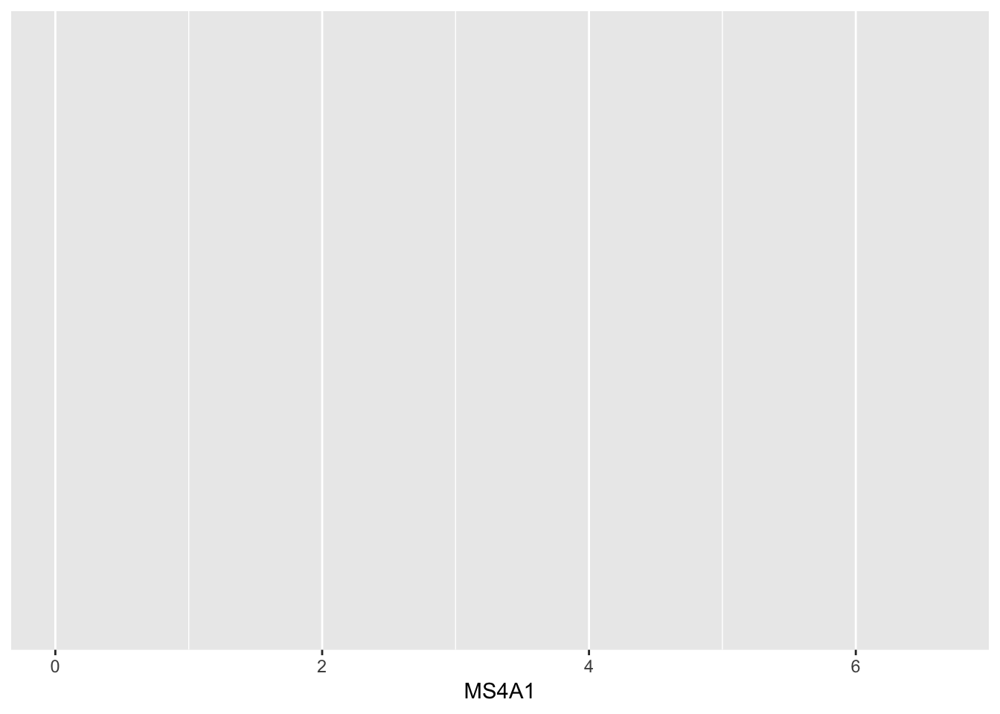
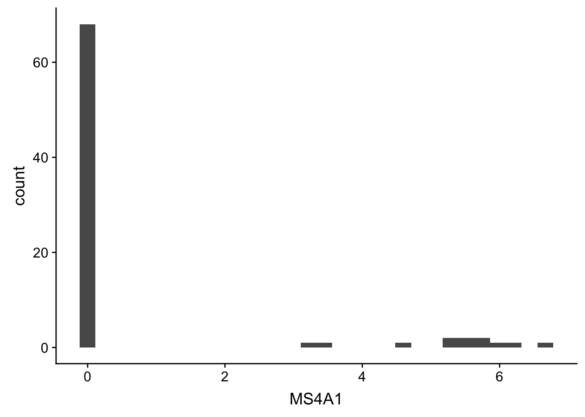
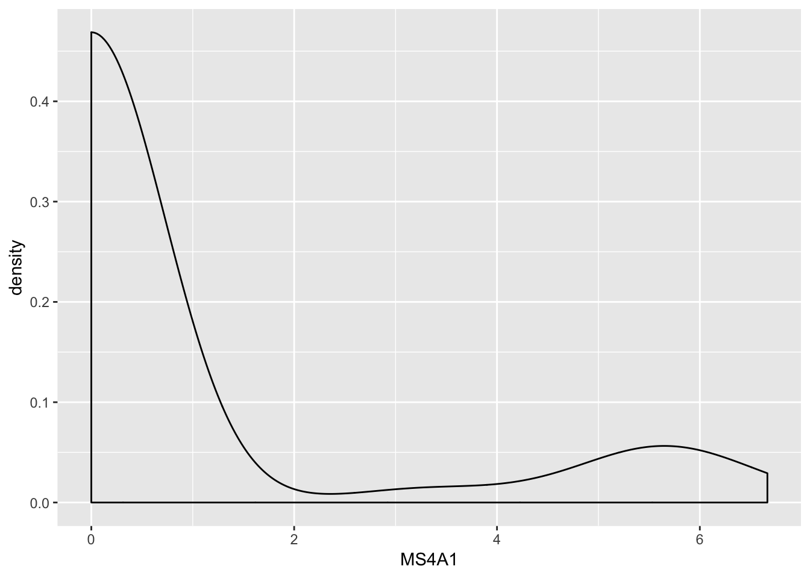
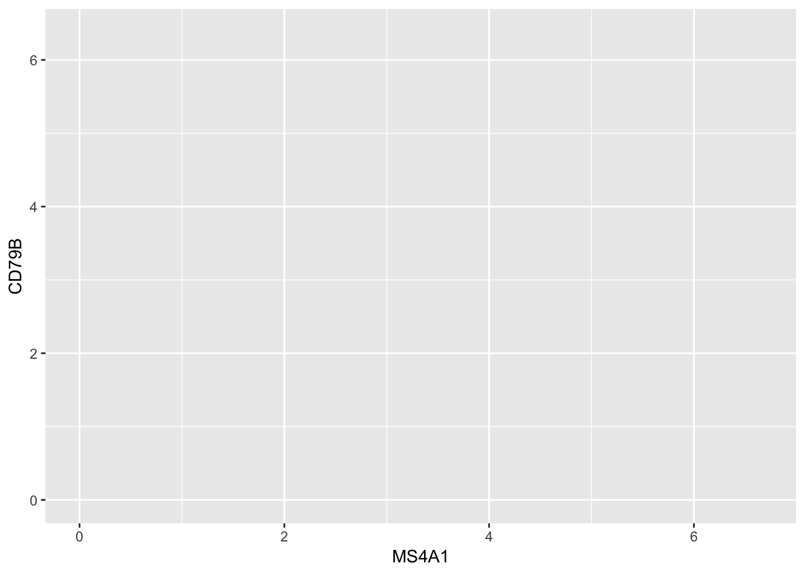
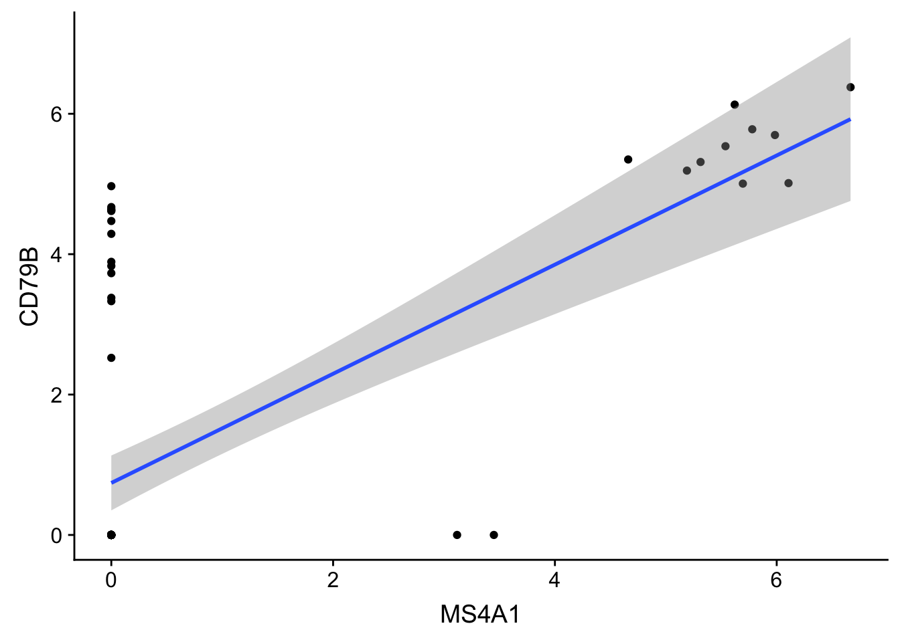
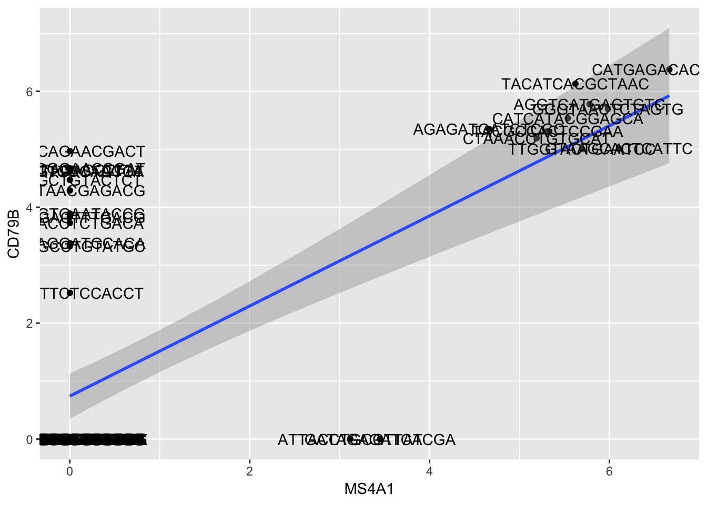

7 Introduction R/Bioconductor
7.1 Start Environment
## maybe take away the --rm so they can save the container for later
## run from your home directory
cd
## example for user99
docker run --rm -it -e PASSWORD=train \
-v $PWD/Share:/Share \
-v $PWD:/mydir \
-p 9099:8787 kdgosik/scellbern2019Explaination of commands
- docker: command to run docker
- run: asking docker to run a container
- --rm: flag to remove the container when you exit from it
- nothing will be saved from your session to access again later
- this flag can be removed to keep container
- -it: flag to run the container interactively
- - this will keep all session output displaying on the terminal
- - to stop container go to terminal and press Crtl+c
- -v $PWD/Share:/Share: map the share directory from AWS to Share inside docker container
- -v $PWD:/mydir: map your home directory to a directory inside docker container called home
- -p 9017:8787: map docker container port of 8787(rstudio port default) to your computer port 9017
- kdgosik/scellbern2019: the image to run. It will be the image into a container if not already built on your computer
- [image link](https://hub.docker.com/r/kdgosik/scellbern2019)- localhost:9099 or on AWS
- ec2-
.us-west-2.compute.amazonaws.com:$PORT_NUMBER ec2-54-202-32-102.us-west-2.compute.amazonaws.com:9099
- R/Rstudio parts
- Data Types and classes
- Packages and where to get them
- S3 vs S4
Visualizations and ggplot
- Installing packages
- Data-types
- Data manipulation, slicing
- Strings manipulations
- Introducing object oriented programming / S4 objects
- Visualization tools
- Bonus create FeaturePlot from Seurat in base ggplot
Bonus: run RSEM on Dana’s bam files if you are bored
7.2 Installing packages
7.2.1 CRAN
The Comprehensive R Archive Network CRAN is the biggest archive of R packages. There are few requirements for uploading packages besides building and installing succesfully, hence documentation and support is often minimal and figuring how to use these packages can be a challenge it itself. CRAN is the default repository R will search to find packages to install:
install.packages("devtools")
# or multiple packages
install.packages(c("ggplot2", "stringr"))7.2.2 Github
Github isn’t specific to R, any code of any type in any state can be uploaded. There is no guarantee a package uploaded to github will even install, nevermind do what it claims to do. R packages can be downloaded and installed directly from github using the “devtools” package installed above.
## username/repository
devtools::install_github("satijalab/seurat") # latest stable version of Seurat packageGithub is also a version control system which stores multiple versions of any package. By default the most recent “master” version of the package is installed. If you want an older version or the development branch this can be specified using the “ref” parameter:
# different branch
devtools::install_github("satijalab/seurat", ref="release3.0")
# previous commit
## Merge branch 'develop' into feat/MultiModal
## - Shiwei Zheng committed on Jul 2, 2018
devtools::install_github("tallulandrews/M3Drop", ref="551014f488770627ab154a62e59d49df5df98a3f")Note: make sure you re-install the M3Drop master branch for later in the course.
7.2.3 Bioconductor
Bioconductor is a repository of R-packages specifically for biological analyses. It has the strictest requirements for submission, including installation on every platform and full documentation with a tutorial (called a vignette) explaining how the package should be used. Bioconductor also encourages utilization of standard data structures/classes and coding style/naming conventions, so that, in theory, packages and analyses can be combined into large pipelines or workflows.
Bioconductor also requires creators to support their packages and has a regular 6-month release schedule. Make sure you are using the most recent release of bioconductor before trying to install packages for the course.
## >= R 3.5.0
if (!requireNamespace("BiocManager", quietly = TRUE))
install.packages("BiocManager")
BiocManager::install("Rsamtools", version = "3.8", ask = FALSE)7.2.4 Source
The final way to install packages is directly from source. In this case you have to download a fully built source code file, usually packagename.tar.gz, or clone the github repository and rebuild the package yourself. Generally this will only be done if you want to edit a package yourself, or if for some reason the former methods have failed. You can also get previous packages that aren’t supported any more on the CRAN package archive
## Get an old package and install from source
install.packages("GenABEL_1.8-0.tar.gz", type="source")7.3 Installation instructions:
All the packages necessary for this course are available here. A list of the packages will be on the README.md for the repository. A script is also available inside the docker/install.R file.
7.3.1 Classes/Types
R is a high level language so the underlying data-type is generally not important. The exception if you are accessing R data directly using another language such as C, but that is beyond the scope of this course. Instead we will consider the basic data classes: numeric, integer, logical, and character, and the higher level data class called “factor”. You can check what class your data is using the “class()” function.
7.3.1.1 Integer
x <- 4 ## assign value of 4 to x
class(x) ## check class of x## [1] "numeric"is.integer(x) ## check if x is an integer## [1] FALSEis.numeric(x) ## check if x is numeric## [1] TRUEx <- as.numeric(x) ## assign y to be an numeric
is.numeric(x) ## check if the assignment worked## [1] TRUEclass(x) ## check if the assignment worked## [1] "numeric"x ## check value of x## [1] 47.3.1.2 Numeric
## assign value of 1.414 to y
y <- 1.414
## check class of y
class(y)## [1] "numeric"## check if y is numeric
is.numeric(y)## [1] TRUE## check if y is an integer
is.integer(y)## [1] FALSE## assign y to be an integer
y <- as.integer(y)
## check if the assignment worked
is.integer(y)## [1] TRUE## check value of y
y## [1] 17.3.1.3 Logical/ Boolean
The logical class stores boolean truth values, i.e. TRUE and FALSE. It is used for storing the results of logical operations and conditional statements will be coerced to this class. Most other data-types can be coerced to boolean without triggering (or “throwing”) error messages, which may cause unexpected behaviour.
z <- TRUE ## assign value of TRUE to z
class(z) ## check class of z## [1] "logical"is.logical(z) ## check if z is of logical type## [1] TRUE7.3.2 Data structures
- Homogeneous
- 1D: atomic vector
- 2D: matrix
- nD: array
- Heterogeneous
- 1D: list
- 2D: data.frame
7.3.2.1 Character Vectors
## assign a character vector with c() operator
character_vector <- c("A", "C", "T", "G", "C", "T", "G", "C", "G", "A", "T", "G", "A", "C", "G", "A", "C")
## check class
class(character_vector)## [1] "character"## access the 3rd element with [] operator
## *note*: R is index starts at 1 (other programming languages start at 0)
character_vector[3]## [1] "T"## access 3rd through 6th elemenet
character_vector[3:6]## [1] "T" "G" "C" "T"## access the elements 1,4,7,10 with c()
character_vector[c(1, 4, 7, 10)]## [1] "A" "G" "G" "A"## access all the A's
character_vector[grep("A", character_vector)]## [1] "A" "A" "A" "A"7.3.2.2 Numeric Vector
The “numeric” class is the default class for storing any numeric data - integers, decimal numbers, numbers in scientific notation, etc…
## assign a character vector with c() operator
numeric_vector <- c(1, 5, 21, 17, 98, 35, 11, 13)
## check class
class(numeric_vector)## [1] "numeric"## access the 5th element with [] operator
numeric_vector[5]## [1] 98## access 2nd through 4th elemenet
numeric_vector[2:4]## [1] 5 21 17## backticks ` ` allow you to give names with non-typical characters
`numeric?_vecotr` <- c("A", 1, 5, 21, 17, 98, 35, 11, 13)
## check vector
`numeric?_vecotr`## [1] "A" "1" "5" "21" "17" "98" "35" "11" "13"## check class (Notice the quotation marks on the numbers!)
class(`numeric?_vecotr`)## [1] "character"7.3.2.3 Factor Vector
String/Character data is very memory inefficient to store, each letter generally requires the same amount of memory as any integer. Thus when storing a vector of strings with repeated elements it is more efficient assign each element to an integer and store the vector as integers and an additional string-to-integer association table. Thus, by default R will read in text columns of a data table as factors.
factor_vector <- factor(numeric_vector)
factor_vector## [1] 1 5 21 17 98 35 11 13
## Levels: 1 5 11 13 17 21 35 987.3.2.4 Named Vector
names(numeric_vector) <- paste0("Patient", 1 : length(numeric_vector))
numeric_vector## Patient1 Patient2 Patient3 Patient4 Patient5 Patient6 Patient7 Patient8
## 1 5 21 17 98 35 11 137.3.2.5 List
## change the c() operator to list() operator
new_list <- list("A", 1, 5, 21, 17, 98, 35, 11, 13)
new_list## [[1]]
## [1] "A"
##
## [[2]]
## [1] 1
##
## [[3]]
## [1] 5
##
## [[4]]
## [1] 21
##
## [[5]]
## [1] 17
##
## [[6]]
## [1] 98
##
## [[7]]
## [1] 35
##
## [[8]]
## [1] 11
##
## [[9]]
## [1] 13## get 2nd element of list
new_list[[2]]## [1] 1names(new_list) <- paste0("Patient", 1 : length(new_list))
new_list## $Patient1
## [1] "A"
##
## $Patient2
## [1] 1
##
## $Patient3
## [1] 5
##
## $Patient4
## [1] 21
##
## $Patient5
## [1] 17
##
## $Patient6
## [1] 98
##
## $Patient7
## [1] 35
##
## $Patient8
## [1] 11
##
## $Patient9
## [1] 13## get 2nd element of list
new_list[[2]]## [1] 1- 2D
7.3.2.6 matrix
Create Matrix
## create numeric matrix
numeric_matrix <- matrix(sample(1:10, 100, replace = TRUE), nrow = 10, ncol = 10)
class(numeric_matrix) ## check class## [1] "matrix"Check Structure
str(numeric_matrix)## int [1:10, 1:10] 9 2 6 8 7 6 1 3 1 7 ...Get 3rd Row
## get 3rd row
numeric_matrix[3, ]## [1] 6 6 6 10 4 6 7 5 4 10Get 4th Column
## get 4th colum
numeric_matrix[, 4]## [1] 10 4 10 1 1 9 8 1 7 17.3.2.7 data.frame
Get data.frame
## built in R data.frame iris
head(iris)## Sepal.Length Sepal.Width Petal.Length Petal.Width Species
## 1 5.1 3.5 1.4 0.2 setosa
## 2 4.9 3.0 1.4 0.2 setosa
## 3 4.7 3.2 1.3 0.2 setosa
## 4 4.6 3.1 1.5 0.2 setosa
## 5 5.0 3.6 1.4 0.2 setosa
## 6 5.4 3.9 1.7 0.4 setosaCheck Class
class(iris)## [1] "data.frame"Check Structure
str(iris)## 'data.frame': 150 obs. of 5 variables:
## $ Sepal.Length: num 5.1 4.9 4.7 4.6 5 5.4 4.6 5 4.4 4.9 ...
## $ Sepal.Width : num 3.5 3 3.2 3.1 3.6 3.9 3.4 3.4 2.9 3.1 ...
## $ Petal.Length: num 1.4 1.4 1.3 1.5 1.4 1.7 1.4 1.5 1.4 1.5 ...
## $ Petal.Width : num 0.2 0.2 0.2 0.2 0.2 0.4 0.3 0.2 0.2 0.1 ...
## $ Species : Factor w/ 3 levels "setosa","versicolor",..: 1 1 1 1 1 1 1 1 1 1 ...Get 3rd Row
## get 3rd row
iris[3,]## Sepal.Length Sepal.Width Petal.Length Petal.Width Species
## 3 4.7 3.2 1.3 0.2 setosaGet 4th Column
## get 4th colum
iris[,4]## [1] 0.2 0.2 0.2 0.2 0.2 0.4 0.3 0.2 0.2 0.1 0.2 0.2 0.1 0.1 0.2 0.4 0.4
## [18] 0.3 0.3 0.3 0.2 0.4 0.2 0.5 0.2 0.2 0.4 0.2 0.2 0.2 0.2 0.4 0.1 0.2
## [35] 0.2 0.2 0.2 0.1 0.2 0.2 0.3 0.3 0.2 0.6 0.4 0.3 0.2 0.2 0.2 0.2 1.4
## [52] 1.5 1.5 1.3 1.5 1.3 1.6 1.0 1.3 1.4 1.0 1.5 1.0 1.4 1.3 1.4 1.5 1.0
## [69] 1.5 1.1 1.8 1.3 1.5 1.2 1.3 1.4 1.4 1.7 1.5 1.0 1.1 1.0 1.2 1.6 1.5
## [86] 1.6 1.5 1.3 1.3 1.3 1.2 1.4 1.2 1.0 1.3 1.2 1.3 1.3 1.1 1.3 2.5 1.9
## [103] 2.1 1.8 2.2 2.1 1.7 1.8 1.8 2.5 2.0 1.9 2.1 2.0 2.4 2.3 1.8 2.2 2.3
## [120] 1.5 2.3 2.0 2.0 1.8 2.1 1.8 1.8 1.8 2.1 1.6 1.9 2.0 2.2 1.5 1.4 2.3
## [137] 2.4 1.8 1.8 2.1 2.4 2.3 1.9 2.3 2.5 2.3 1.9 2.0 2.3 1.8Get 3rd Row
## get 3rd row
numeric_matrix[3, ]## [1] 6 6 6 10 4 6 7 5 4 10Get Species Variable
## get variable
iris$Species## [1] setosa setosa setosa setosa setosa setosa
## [7] setosa setosa setosa setosa setosa setosa
## [13] setosa setosa setosa setosa setosa setosa
## [19] setosa setosa setosa setosa setosa setosa
## [25] setosa setosa setosa setosa setosa setosa
## [31] setosa setosa setosa setosa setosa setosa
## [37] setosa setosa setosa setosa setosa setosa
## [43] setosa setosa setosa setosa setosa setosa
## [49] setosa setosa versicolor versicolor versicolor versicolor
## [55] versicolor versicolor versicolor versicolor versicolor versicolor
## [61] versicolor versicolor versicolor versicolor versicolor versicolor
## [67] versicolor versicolor versicolor versicolor versicolor versicolor
## [73] versicolor versicolor versicolor versicolor versicolor versicolor
## [79] versicolor versicolor versicolor versicolor versicolor versicolor
## [85] versicolor versicolor versicolor versicolor versicolor versicolor
## [91] versicolor versicolor versicolor versicolor versicolor versicolor
## [97] versicolor versicolor versicolor versicolor virginica virginica
## [103] virginica virginica virginica virginica virginica virginica
## [109] virginica virginica virginica virginica virginica virginica
## [115] virginica virginica virginica virginica virginica virginica
## [121] virginica virginica virginica virginica virginica virginica
## [127] virginica virginica virginica virginica virginica virginica
## [133] virginica virginica virginica virginica virginica virginica
## [139] virginica virginica virginica virginica virginica virginica
## [145] virginica virginica virginica virginica virginica virginica
## Levels: setosa versicolor virginica7.3.3 Detour to S3/S4
- S3 most of R uses
- Bioconductor requires R packages to be written as S4 objects
- OO field guide
- Closer to a typical programming language
- Classes/Methods and Generics
- Lots of Generics implemented for Bioinformatics!
Different way to access values. Need to use the @ symbol instead of $
- (@ is equivalent to $, and slot() to [[.)
## example
object@7.3.3.1 Sparse Matrix
Triplet format for storing a matrix row, column, value i, p, x
Different from base R. Uses the S4 methods that Bioconductor uses.
sparse_matrix <- pbmc_small@data[1:10, ]
class(sparse_matrix)ith row - 1
sparse_matrix@ipth column - 1
sparse_matrix@pvalue
sparse_matrix@xGet First Value
sparse_matrix[2,1]dense matrix
dense_matrix <- as.matrix(sparse_matrix)
class(dense_matrix)str(dense_matrix)Get First Value
dense_matrix[2,1]7.3.3.2 Functions
create_function <- function(x, y) {
}7.3.3.3 Reading Files
## read csv files
read.csv("PATH/TO/FILENAME.csv")
## read tsv files
read.delim("PATH/TO/FILENAME.tsv", sep = '\t')7.4 More information
You can get more information about any R commands relevant to these datatypes using by typing ?function in an interactive session.
7.4.1 Checking for help for any function!
- start with a ? (this indicates you need the help menu)
- then the function name to get help on
library(ggplot2)
?ggplot ## ggplot is a function, how do we use it?7.5 Grammer of Graphics (ggplot2)
7.5.1 What is ggplot2?
ggplot2 is an R package designed by Hadley Wickham which facilitates data plotting. In this lab, we will touch briefly on some of the features of the package. If you would like to learn more about how to use ggplot2, we would recommend reading “ggplot2 Elegant graphics for data analysis”, by Hadley Wickham or checking out his original paper on the package
- Data: Always start with the data, identify the dimensions you want to visualize.
- Aesthetics: Confirm the axes based on the data dimensions, positions of various data points in the plot. Also check if any form of encoding is needed including size, shape, color and so on which are useful for plotting multiple data dimensions.
- Scale: Do we need to scale the potential values, use a specific scale to represent multiple values or a range?
- Geometric objects: These are popularly known as ‘geoms’. This would cover the way we would depict the data points on the visualization. Should it be points, bars, lines and so on?
- Statistics: Do we need to show some statistical measures in the visualization like measures of central tendency, spread, confidence intervals?
- Facets: Do we need to create subplots based on specific data dimensions?
- Coordinate system: What kind of a coordinate system should the visualization be based on — should it be cartesian or polar?

7.5.2 Principles of ggplot2
- Your data must be a dataframe if you want to plot it using ggplot2.
- Use the
aesmapping function to specify how variables in the dataframe map to features on your plot Use geoms to specify how your data should be represented on your graph eg. as a scatterplot, a barplot, a boxplot etc.
Data: Always start with the data, identify the dimensions you want to visualize.
library(Seurat)
library(ggplot2)
gbm <- pbmc_small@assays$RNA@data
gbm <- as.data.frame(as.matrix(t(gbm)))
new_plot <- ggplot(gbm)- Aesthetics: Confirm the axes based on the data dimensions, positions of various data points in the plot. Also check if any form of encoding is needed including size, shape, color and so on which are useful for plotting multiple data dimensions.
1D Plots
new_plot_1dx <- ggplot(gbm, aes(x = MS4A1))
new_plot_1dx
Scale: Do we need to scale the potential values, use a specific scale to represent multiple values or a range?
Geometric objects: These are popularly known as ‘geoms’. This would cover the way we would depict the data points on the visualization. Should it be points, bars, lines and so on?
## ggplot(gbm, aes(x = MS4A1)) + geom_histogram()
## or
## new_plot_1dx <- new_plot_1dx + geom_histogram() ## reassign
new_plot_1dx + geom_histogram()## `stat_bin()` using `bins = 30`. Pick better value with `binwidth`.
7.5.2.1 Lab A
Use different geom_ to make a different plots - try _bar() - try _density()
new_plot_1dx + geom_density()
- Statistics: Do we need to show some statistical measures in the visualization like measures of central tendency, spread, confidence intervals?
ggplot(gbm, aes(x = MS4A1)) + geom_histogram() + stat_bin(bins = 10)## `stat_bin()` using `bins = 30`. Pick better value with `binwidth`.
2D Plots
new_plot_2d <- ggplot(gbm, aes(x = MS4A1, y = CD79B))## scatter plot
new_plot_2d + geom_point()
7.5.2.2 Lab B
Use different geom_ to make a different plots - try _bar_abline() - try _bin2d()
new_plot_2d
- Adding Statisitics in 2D plots
- Regression line (lm - linear model using OLS regression)
ggplot(gbm, aes(MS4A1, CD79B)) + geom_point() + stat_smooth(method = "lm")
- Adding Text Labels
## notice plus `+` at the end of each line, adding a new layer!
ggplot(gbm, aes(MS4A1, CD79B)) + ## Data layer
geom_point() + ## Geometry layer
stat_smooth(method = "lm") + ##
geom_text(aes(label = rownames(gbm)))
7.5.2.3 Lab C
Play arund with ggplot2. See what geoms to add and layers to include.
ggplot(gbm, aes(x = MS4A1, y = CD79B))